Włącz się w zrównoważony rozwój w branży czystości
Wiele problemów i tragedii w różnych obszarach życia wynika ze skumulowanych, negatywnych konsekwencji małych decyzji. Pomimo, że wiele decyzji jest uzasadnionych w odczuciu podejmujących je osób, to szereg z nich nie uwzględnia odległych następstw wyborów. Podstępne, chociaż niezamierzone skutki, pozornie racjonalnych postanowień pojedynczych osób, kumulują się i wywierają negatywny wpływ na społeczeństwa, politykę, ekonomię, zdrowie, środowisko i inne dziedziny.
To zjawisko nosi nazwę tyranii małych decyzji i odnosi się również do aktywności człowieka związanej ze sprzątaniem.
Chociaż pojedynczy zabieg czyszczenia nie ma dużego znaczenia, to skumulowane skutki pojedynczych czynności realizowanych przez wielu ludzi sprzątających w domach, a zwłaszcza w firmach sprzątających, będące wynikiem decyzji jak, czym i kiedy czyścić, zebrane na przestrzeni całego ich życia, całego pokolenia i całego globu, wywierają istotny, negatywny wpływ na zdrowie ludzi i środowisko.
Aby ograniczyć negatywne skutki czyszczenia na zdrowie jego wykonawców i użytkowników sprzątanych pomieszczeń oraz na środowisko, apelujemy, dokonuj świadomych wyborów w sprawach czyszczenia - sprzątaj odpowiedzialnie.
Nieświadomy (bez kompetencji w zakresie sprzątania) lub nieodpowiedzialny menadżer firmy sprzątającej może skazywać wykonawców czyszczenia i klientów usługi na permanentny kontakt z niebezpiecznymi substancjami i mieszaninami, które drażnią, uczulają, działają toksycznie, mutagennie, rakotwórczo; może codziennie wyrzucać setki worków na śmieci, kilogramy jednorazowych materiałów czyszczących; wylewać kilkaset litrów ścieków obciążających systemy uzdatniające wodę i zatruwających wody rzek; ograniczać i uniemożliwiać recykling wartościowych odpadów.
W tym kontekście, obciążenia w wyniku działalności firm czyszczących, dla środowiska naturalnego, w tym człowieka, z perspektywy lat, pokoleń i całego globu, muszą być ogromne.
Podejmij proste działania, aby ograniczyć negatywny wpływ zabiegów czyszczenia na zdrowie i bezpieczeństwo ludzi oraz pozostałe elementy środowiska naturalnego
Przede wszystkim, zadbaj o bezpieczeństwo wykonawców usługi, zdrowe środowisko wewnętrzne sprzątanych obiektów, ogranicz zużycie wody, energii, zrezygnuj lub zredukuj zużycie chemii czyszczącej, głównie preparatów uznanych za niebezpieczne, zminimalizuj odpady po usługowe, zadbaj o selekcję odpadów.
Czyszczenie opieraj na profesjonalnych preparatach, których bezpieczeństwo dla ludzi i środowiska potwierdzone jest certyfikatem, np. międzynarodowym Cradle to Cradle, europejskim Ecolabel, skandynawskim Nordic Ecolabel, Międzynarodową kartą zrównoważonego czyszczenia AISE (Międzynarodowe Stowarzyszenie Producentów Mydeł, Detergentów i Środków Czystości). Dzięki temu chronisz zdrowie swoje i innych ludzi, ograniczasz niebezpieczne substancje wprowadzane do kanalizacji, w konsekwencji, do rzek i mórz. Wspierając popyt na zrównoważone produkty czyszczące, dbasz jednocześnie o jakość życia obecnych i przyszłych pokoleń. To prosty w realizacji wkład w proces zrównoważonego rozwoju.
Nie używaj armaty, aby zabić komara.Nie stosuj produktów oznaczonych symbolami/piktogramami substancji niebezpiecznych, jeśli możesz zastąpić je substancjami/mieszaninami ekologicznymi. Jeśli sprzątasz w domu, w biurze, zrezygnuj z nich zupełnie. Ich użycie jest nieuzasadnione, a szkodzą i Tobie i domownikom i środowisku.
Zespół Master Adams bazuje na produktach marki Green Care Professional firmy Werner & Mertz, o najwyższym światowym standardzie dostępnym zrównoważonym produktom czyszczącym z certyfikatem Cradle to Cradle na poziomie złotym. Produkty zostały sklasyfikowane jako całkowicie bezpieczne dla ludzi i środowiska. Ich opakowania są zaprojektowane zgodnie z koncepcją integralnego zrównoważenia produktu, nadają się do wysokiej jakości odzysku i są wyróżnione certyfikatem Cradle to Cradle na poziomie srebrnym.
Wybieraj bardziej zrównoważone materiały czyszczące. Używaj ścierki i mopy z dobrej jakości mikrowłókien, ponieważ są efektywne - bez chemii, lub z mniejszą ilością chemii, usuniesz zabrudzenia i chorobotwórcze mikroby. Są bezpieczne dla czyszczonych powierzchni i trwałe. Dobrze konserwowane posłużą przez kilka lat, opóźnisz ich uznanie za odpad i odroczysz zakup nowych materiałów. Ponieważ mikrowłókna są produkowane z pochodnych z ropy naftowej, wybieraj takie materiały, które posiadają ekologiczny certyfikat, aby mieć pewność, że są przyjazne dla środowiska w całym cyklu życia produktu, począwszy od produkcji, przez jego użytkowanie, aż do utylizacji.
Master Adams bazuje na materiałach marki Duotex firmy Microsystem wyróżnionych certyfikatem Nordic Ecolabel. Nordycki Łabędź, gwarantuje m. in., że emisja CO2 i innych szkodliwych gazów mających wpływ na zmiany klimatyczne, jest ograniczona w całym cyklu życia produktu oraz wymaga, m. in., aby co najmniej 80 % włókien do produkcji materiałów pochodziło z przetworzonych surowców.
Przedłużaj żywotność wielorazowych materiałów czyszczących (ścierki, mopy, bonety, gąbki, pady) przez ich prawidłową eksploatację, pranie, naprawianie i znajdowanie dodatkowych zastosowań.
W Master Adams zniszczone materiały wielorazowe, nim uznamy za odpad, wykorzystujemy przy gruntownych czyszczeniach, a ostatecznie traktujemy jako czyściwa do eliminacji szczególnych zanieczyszczeń.
Ścierki, mopy, bonety pierz ekologicznie - artykuł „Jak prać EKOlogicznie” i „Pranie tekstyliów czyszczących z mikrowłókien”.
Aby zredukować codzienną ilość odpadów pousługowych, ogranicz zastosowanie czyściw (jednorazowych materiałów czyszczących) do sytuacji koniecznych. Użyte tylko raz, zazwyczaj wykonane z tworzywa sztucznego wyprodukowanego z pochodnych ropy naftowej, zapełniają wysypiska, bo rzadko są poddawane recyklingowi. Jeżeli stosowanie czyściw jest konieczne, używaj czyściw biodegradowalnych i/lub pochodzących z recyklingu.
Stosuj materiały czyszczące nie wymagające użycia chemii i chroniące zasoby środowiska lub np. pady z melaminy do ręcznego i maszynowego czyszczenia powierzchni, pady diamentowe do maszynowego czyszczenia/renowacji posadzek
Racjonalnie zużywaj worki na śmieci.Jeśli zawartość kosza na śmieci jest sucha, wykorzystaj worek kilkakrotnie. Dobieraj wielkość worka do wielkości kosza - mały worek do małego kosza.
Jeśli zbierasz dużo biodegradowalnej frakcji odpadów przekazywanych do kompostowni, to stosuj worki biodegradowalne. Z punktu widzenia kompostowni worki biodegradowalne i bioodpady są tym samym, nie trzeba więc ich rozdzielać, a to bardzo upraszcza proces i przyczynia się do zwiększenia wartości produkowanego kompostu. Worki z tworzyw kompostowalnych i/lub biodegradowalnych i/lub pochodzących ze źródeł odnawialnych, nie zalegną na wysypiskach przez setki lat i nie uwolnią szkodliwych substancji.
Zidentyfikuj zagrożenia związane z realizacją konkretnej usługi sprzątania, głównie chemiczne, biologiczne, fizyczne. Aby ich uniknąć lub zredukować zastosuj zasady, techniki, metody, procedury, organizację pracy, środki ochrony, które zapewnią bezpieczeństwo i zdrowie wykonawców usługi i użytkowników czyszczonych pomieszczeń.
Zagadnienie ochrony zdrowia w sprzątaniu jest zbyt szerokie, aby w Apelu przedstawić jego aspekty (materiał na osobny artykuł). Dlatego odsyłam tylko do jednego z elementów tej ochrony tj. zasad bezpiecznego stosowania chemii czyszczącej
Stosuj zasady, techniki, metody, procedury, organizację pracy, dzięki którym efektywniej wykorzystasz chemię, materiały, sprzęt, wodę i energię, również twoją własną:
- Stosuj metody pracy wielokrotnie ograniczające zużycie chemii lub wody, jak np. system dwu wiaderkowy, kuwetowy (nasączone roztworem myjącym ścierki lub mopy jednego kontaktu), dwu wiaderkowy uproszczony (roztwór roboczy w opakowaniu z atomizerem i wiaderko z czystą wodą do płukania ścierki). Możesz ograniczyć zużycie chemii (zaoszczędzić pieniądze) kilkadziesiąt i więcej razy. Tym samym do kanalizacji, za każdym razem, wylejesz wielokrotnie mniej i chemii i wody.
- Zakresy i harmonogramy sprzątania, tak projektuj, aby zapewnić pożądany wizualny i higieniczny standard sprzątania, bez zbytecznego obciążania środowiska, czyli nie czyść, jeśli nie trzeba. Nie każde pomieszczenie wymaga codziennego sprzątania. Czasami wystarczy 3 razy, 2 razy lub 1 raz w tygodniu, w przypadku niektórych pomieszczeń, nawet rzadziej. Odraczaj zabiegi gruntownego czyszczenia, zwłaszcza stripowania posadzek, poprzez codzienną rzetelność czyszczenia i fachowość.
- Aby wytwarzać mniej odpadów opakowaniowych, kupuj produkty chemiczne w dużych opakowaniach zbiorczych i dozuj chemię wg wskazań producentów. Korzystaj dozowników, a nie lej „na oko”.
- Nie wylewaj brudnej wody z chemią ani resztek chemikaliów na glebę lub do studzienki przeciwdeszczowej, bo przechodzi do wód gruntowych z ominięciem oczyszczalni ścieków i zatruwa naturalne cieki wodne. Dlatego też, nie myj samochodu w miejscu do tego nie przystosowanym tj. bez bez odpływu do kanalizacji miejskiej. Poza tym grozi za to mandat, również za mycie bez użycia chemii.
- Nie wylewaj niezużytych produktów chemicznych do kanalizacji, ponieważ oczyszczenie wody jest wówczas bardziej kosztowne i nie zawsze możliwe, a przecież ścieki komunalne i przemysłowe kierowane są do rzek. Zanieś niepotrzebną chemię do punktu segregacji odpadów komunalnych.
- Nie gromadź zbyt dużych zapasów chemii czyszczącej i pielęgnującej. Ma zazwyczaj tylko dwa lata gwarancji.
- Segreguj odpady, w tym opakowaniowe, aby zapewnić ich recykling.
- Znajdź ponowne wykorzystanie dla odpadów, aby opóźnić zakwalifikowanie ich jako odpad. Kilkanaście kotów wolno bytujących ma ciepłe schronienia zimą i komfortowe latem, dzięki pomysłowości naszej pracownicy Grażyny, która pokazała nam, jak styropianowy odpad opakowaniowy zamienić na budę. Również kilka bezdomnych osób nie śpi na betonie, a na styropianowych materacach. Styropian trafi do zakładu przetwórstwa później.
Reflektuj swoje decyzje i działania związane ze sprzątaniem, czyszczeniem, praniem, myciem. Kontroluj i analizuj swoje decyzje pod kątem wpływu zabiegów czyszczących na bezpieczeństwo swoje, innych ludzi, czyszczone powierzchnie i otoczenie przyrodnicze. Myśl twórczo, poszukuj nowych rozwiązań, twórz wiedzę z zakresu zrównoważonego czyszczenia i dziel się tą wiedzą z innymi. Przekazuj swoje poparcie dla ekologicznego sprzątania, a w konsekwencji dla zrównoważonego świata. Opowiadaj o swoim zaangażowaniu w szkole lub w miejscu pracy, rozmawiaj z rodziną i znajomymi przy kawie. Wykorzystaj swoje sieci społecznościowe, które są cennym zasobem w szerzeniu zrównoważonej koncepcji.
Sprzątaj odpowiedzialnie - z miłością dla ludzi, zwierząt, roślin, środowiska!Jeśli popierasz odpowiedzialne sprzątanie Master Adams, weź od nas przykład, dodaj nas do ulubionych, poleć biznesowym partnerom.
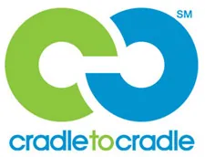
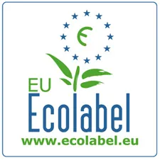
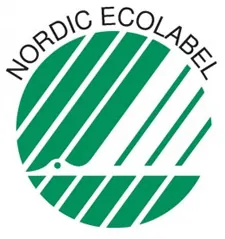
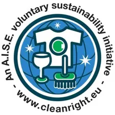
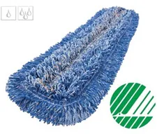
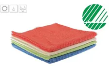
Zdjęcia zamieszczono dzięki uprzejmości Microsystem producentowi marki Duotex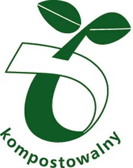
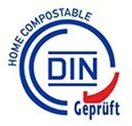
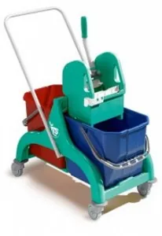
Wózek do czyszczenia systemem dwu wiaderkowym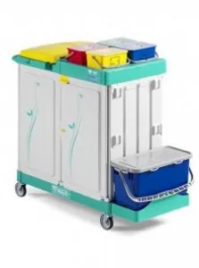
Wózek serwisowy do czyszczenia metodą kuwetową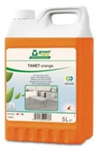
tylko 1 - 2 opakowania w roku staną się odpadem przy codziennym sprzątaniu na 1 etat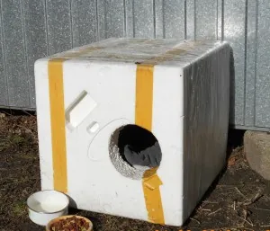
buda dla kota z odpadu opakowaniowego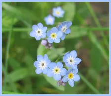
Fotograf MM